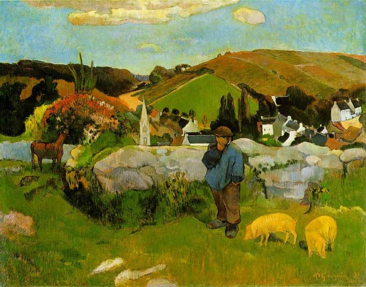
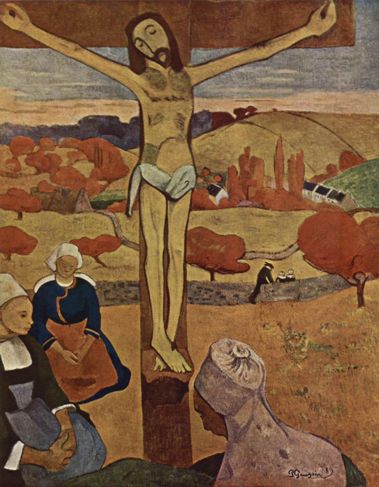
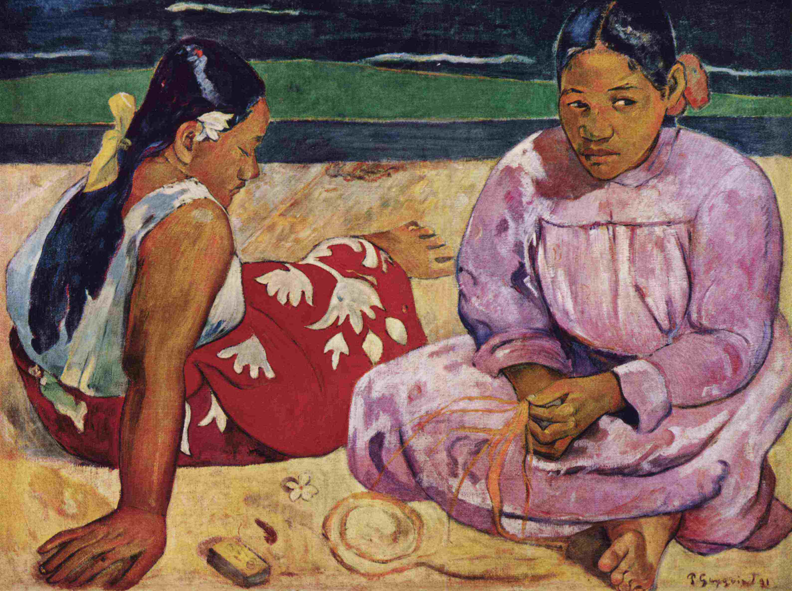
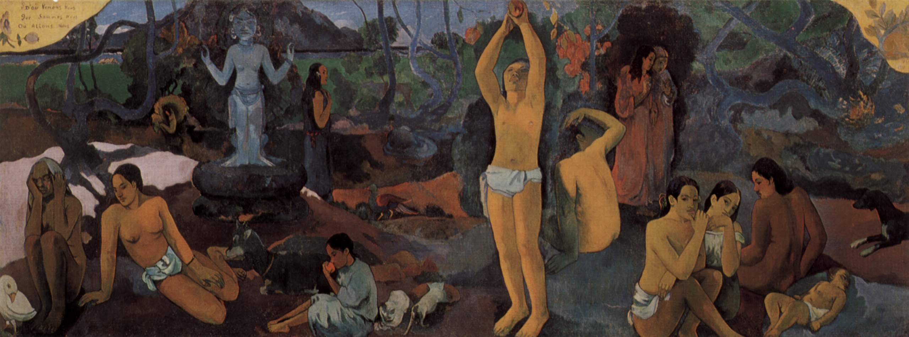

欧仁·亨利·保罗·高更（Eugène Henri Paul Gauguin，出生于公元1848年6月7日的法国巴黎，卒于1903年5月8日）。是一位印象派画家。大部分艺术史家将他归于后印象派。 他是印象派的代表人物，除去绘画之外，在雕塑、陶艺、版画和写作上也有一定的成就。他对色彩的使用导致了综合主义的产生，加上分隔主义的影响，也为原始主义的产生铺平了道路。
他的父亲克洛维·高更（Clovis Gauguin）是一名激进的共和制思想政治新闻记者。1849年“反君主制”军事政变失败之后离开法国，打算去秘鲁投靠妻子阿琳·玛丽·夏札尔（Aline Marie Chazal）的家族，创办新报纸，但在海上旅行途中心脏病发去世。高更的外祖父安德烈·夏札尔（Andre Chazal）是一名雕刻师，外祖母弗洛拉·特里斯坦是一名社会主义激进派作家。他的外祖父后来因袭击外祖母而被以谋杀未遂罪判处监禁。高更深深敬爱母亲和外祖母，他的母亲没有屈服于困难，凭自己的双手扶养起一双儿女，而作为社会主义先驱的外祖母也对他产生了较深刻的影响。
返回法国不久后高更便再次回到大溪地，但好景不长，由于没有任何经济来源，他再次受到贫困和疾病的困扰，但其创造力丝毫没有衰减。
1901年，高更到了马克萨斯群岛，在那里度过余生，他的两只小腿都是流着脓的疮，以肮脏的绷带包住，他拄著拐杖蹒跚地晃荡。他全身到处疼痛，为了止痛而服用吗啡上瘾，还服用鸦片酊和苦艾酒。他的情绪，逐渐变成躁狂，腿上有伤痛所以使用砷，他也曾经到山上服用砷自杀，但是毒性不够只使他呕吐不已。他自诉体力流失，晚上都无法入眠，因此筋疲力尽。眼睛受到感染，可能是结膜炎。
1903年5月8日，高更由于心脏病发作而去世，他的墓地位于马克萨斯群岛上的希瓦瓦岛，至今每年都有许多游客前往吊祭。
高更早期绘画是属于印象派画风的，印象派是以瞬间的印象做画。绘画只会着重考虑作品的总体效果，顾及不到枝节细部。以豪放的笔法做画，而作品就缺乏修饰效果，是一种对笔法较草率的画法。而高更早期绘画作品深受毕沙罗的影响，他也采用印象派传统的用色方法以红、黄、蓝三原色为主绘制了一批带有浓厚的印象派特色的作品。
因高更内心对绘画艺术的探索，而使高更对印象派绘画产生了不满足感。1880 年代早期，高更将笔触放松、变宽，大胆地、自由地加重色泽的明亮感，开始注重刻画细节。在对待光影处理方面，还有着鲜明的印象画派的特点。他看重光影的变化，使用大面积色彩平涂的手法、颜色大胆强烈，注重物体的体积感、线条干净利落，构图简洁。
高更在巴黎认识了梵高，从梵高的身上认识到什么是“别具一格”。于是他开始尝试突破印象派的绘画手法。强调绘画应抒发自己的感受。1888年，他再度来到布列塔尼，结交了许多画家，这些画家的“简化形体，用线条勾画形体边缘，色彩使用平涂的画法”的观念影响到高更的绘画观。之后，欧洲开始流行日本浮世绘，而高更也非常喜欢浮世绘，浮世绘版画中平面平涂的技巧，艳丽的单色，流畅的线条都吸引着他，高更便把这些绘画观念进行修正和润饰，形成高更的“综合主义”绘画的基础理论。
在高更的风格成熟时期，我们可以从他的画作中看到许多条状的色块，这些条状色块简洁明确，使画面的色彩对比更为和谐。高更早期绘画中色彩纯度不是很高，且许多颜色是过渡调和的，也不知道如何在画作中运用色彩的纯度。而大溪地之行，他看到美丽的大溪地的景色，他便把色彩直接涂抹在油画布上，用色彩来表达自己对大溪地的喜爱之情。
高更对现代艺术的贡献体现在理论和形式上、对绘画本质的信念上，他认为绘画的本质是某种独立于自然之外的东西，而艺术就是他所向往的某种生活方式。他的绘画风格、绘画形式，都摆脱了精神上的束缚，贯穿着神秘、原始、象征、主观的绘画理念。他从原始艺术和传统艺术中获取灵感，无论是构图还是色彩，都具有很强的装饰性效果和神秘感。他那粗犷、有力的绘画风格，以构思的大胆、线条的单纯、纯真净美而又鲜明的色彩、具有很强装饰性的构图而触动人们的心灵，追求对形态和色彩的极富主观性的夸张，对后世艺术家产生了一定的影响，为各种原始艺术和象征艺术开拓了道路，指引了方向。
| 作品名称 | 创作时间 |
|---|---|
| 《卡塞尔街冬天的花园》 | 1883年 |
| 《静物和查理·拉瓦尔侧面像》 | 1886年 |
| 《阿旺桥的茅舍》 | 1886年 |
| 《马提尼克岛风光》 | 1887年 |
| 《说教后的幻觉》 | 1888年 |
| 《洗衣妇》 | |
| 《玛德琳·伯纳尔肖像》 | |
| 《文森特头像》 | |
| 《阿尔的洗衣妇》 | |
| 《阿尔疗养院的庭院》 | |
| 《黄色的基督》 | 1889年 |
| 《苏菲奈克一家》 | |
| 《美丽的昂热尔》 | |
| 《绿色的基督》 | |
| 《保罗·高更变形肖像》 | |
| 《你好，高更先生》 | |
| 《韦丹·古比尔小姐肖像》 | 1891年 |
| 《玛丽亚，我们向您致敬》 | |
| 《持花女子》 | |
| 《塔希提牧歌》 | 1892年 |
| 《有孔雀的风景》 | |
| 《在海边》 | |
| 《死者的灵魂注视着》 | |
| 《月亮与大地》 | 1893年 |
| 《上哪儿去？》 | |
| 《爪哇女人安娜》 | |
| 《死者的精神不眠》 | |
| 《手持调色板的保罗·高更》 | |
| 《洗衣女》 | 1894年 |
| 《布列塔尼的女人》 | |
| 《手持芒果的女子》 | 1896年 |
| 《快乐的日子》 | |
| 《你为什么生气？》 | |
| 《我们从哪里来？我们是什么？我们往哪里去？》 | 1898年 |
| 《白马》 | |
| 《玫瑰花中的酥胸》 | |
| 《她们金色的身体》 | 1901年 |
| 《神秘的女子》 | |
| 《亚当和夏娃》 | 1902年 |
| 《土屋中的塔希提女人》 | |
| 《呼唤》 |
《布道后的视觉》(Vision after the Sermon)，现收藏于苏格兰爱丁堡苏格兰国家美术馆
《不列塔尼牧人》(The Swineherd Brittany)，现收藏于美国加州洛杉矶郡立美术馆
《黄色的基督》(The Yellow Christ)，现收藏于美国纽约州布法罗奥尔布赖特-诺克斯美术馆
《沙滩上的大溪地女人》(Tahitian Women,or On the Beach)，现收藏于奥塞美术馆
《我们从哪里来？我们是谁？我们往哪里去？》(Where Do We Come From?What Are We?Where Are We Going?)，现收藏于美国麻州波士顿美术馆